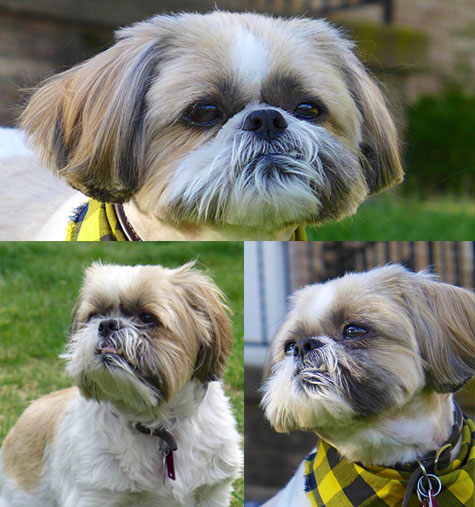

December 2013  Hi I'm Jack. I'm a 13 year old Shih Tzu, though I don't feel like I'm 13. My favorite things to do are watching out the front windows (got to keep an eye on the neighborhood), playing with my many, many toys, and napping. Don't try to sneak some of my old toys out to the trash. I count them. Naps have become an integral part of my daily routine, they usually occur on the couch or my chair. I also really enjoy going to the pet store, there are so many smells to smell and lots of toys to look at and ask to be bought. Though I do not like the bigger dogs trying to say hi or sniff me. Personal space is important to me, and thankfully my people know that and sometimes respect my space, but they insist on sleeping in the bed with me. I love my people very much, it can be hard work to keep them in line, but I manage. |